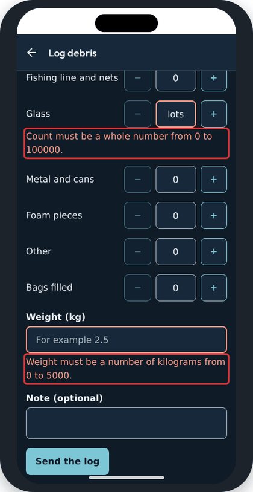

Session 13: Storage and Mobile Forms
How to teach the session where Shoreline Crew starts keeping things and collecting them: AsyncStorage for a checked setting, SQLite with ? values and a migration for the logbook, phone data in the query cache with networkMode 'always'; Checkpoint 2 on Modules 4 and 5 so far with a five-row rubric; then forms on a phone: useController instead of register, handleSubmit called with no event, a keyboard and a return key per field, KeyboardAvoidingView, a Zod schema that accepts a comma, and one clientId per log. Two headless labs and a headless checkpoint, no phone needed.
How to Use This Guide
- Same rhythm for both lessons: frame (the goal and one mental model) → live demo (you type, they follow) → guided lab (a kit lab: new practice on the lesson's ideas, never the lesson's own project) → start the lesson's own project. The lesson exercises, quizzes and journals are homework. Session 13 adds Checkpoint 2 (30 minutes, Modules 4 and 5 so far) and a 10-minute debrief, after the break: its Task 3 needs Lesson 5.3.
- Type, do not paste. Every command below was run to produce the output printed under it, in a learner's terminal: the API on a private port started like a learner's, Lesson 5.3's code on a copy of the app exactly as a learner has it at the end of 5.3, Lesson 5.4's at the end of 5.4, and the logbook's SQL on the SQLite built into Node 24. Where the lesson shows the same command, the kit's output is the lesson's, word for word. Ask for a prediction before every run.
- No phone was used to make this kit. Storage on a phone (AsyncStorage's files, the database file in the app's folder, what survives an update or an uninstall) and everything about keyboards (which keyboard a field gets, the return key, keyboard avoidance) are described the way the lessons describe them: from Expo's, React Native's and the platforms' documentation. The lessons measured the web preview; the kit ran the code headless. Lesson 5.4's Step 10 is the phone test, and it goes home.
- Keep
lesson_17.htmlandlesson_18.htmlopen for the tables (storage, what survives, the four statements, expo-sqlite's methods; useController, keyboards per field, the return-key props, who sees the form). Labs live inlabs/module-13/:starter/folders andTASKS.mdare handouts;solution/folders are yours (the checkpoint's until the debrief). - Part 2, Navigation, Data and Devices, runs Sessions 10 to 17. Checkpoint 2 is formative: it does not count toward the Part 2 assessment (Session 17).
Lessons 5.3 and 5.4 are the two longest of Part 2 (155 and 160 minutes for a learner alone), and the checkpoint needs its full 30 minutes. The room gets each lesson's model, demo and lab, and only the first steps of each project: say early and often that both projects are homework. Hold the clock: the 5.3 block ends at 1:00 wherever the room is, the checkpoint starts at 1:10 sharp, and the 5.4 demo is the place to cut (Cut first, below), never the checkpoint. Learners who did not finish Session 12's homework (the end of Lesson 5.2) still do the checkpoint and both labs (they need no course code); for the projects they start from lesson-17-start.zip in the course downloads.
Before the Session
- ☐ Learners arrive with their app at the end of Lesson 5.2 (TanStack Query, sign-ups as mutations). Anyone behind:
lesson-17-start.zipfrom the course downloads is exactly that code (npm installinshoreline-crew,.env.example→.env.localas its README says).lesson-18-start.zip(= the end of 5.3) is the fallback for the 5.4 project start. - ☐ Run the kit check once:
python3 labs/check_labs.py module-13from this kit's folder (both labs and the checkpoint: the starters fail as shipped, the solutions pass their tests, type checks and lint). No API and no network needed; the checkpoint's first run takes up to a minute while Jest prepares Expo Router. - ☐ Projector machine: VS Code on
shorelineat a large font; two terminals ("api", "crew" inshoreline-crew); the web preview at a phone size;lesson_17.htmlandlesson_18.html; a scratch copy oflesson-17-endandlesson-18-endfrom the course downloads withnpm installdone, so the mistakes you make on purpose never touch your teaching copy. A phone with Expo Go if you have one: the keyboards are the one thing the room cannot see otherwise. - ☐ Board, before learners arrive: the crew van (clipboard = AsyncStorage, lockbox = SecureStore, ledger = SQLite) and "the phone keeps copies, the server keeps the truth"; the four SQL statements; for 5.4 the tally sheet (useController) and "Next, Next, Go"; the checkpoint's start time (1:10).
- ☐ Checkpoint: share
labs/module-13/checkpoint-2/TASKS.mdand the starter (no solution), the five rubric rows on a sticky note per learner (or the guide's rubric printed), and decide how results come back: each learner writes the lastTests:line and one sentence on the workbook's checkpoint page. - ☐ Print or share: the workbook (the checkpoint page included) and sticky notes for the exit ticket.
| Symptom | Cause | Fix |
|---|---|---|
The web preview fails: Unable to resolve module ./wa-sqlite/wa-sqlite.wasm | No metro.config.js adding wasm | Step 1's metro.config.js, then npx expo start --clear (Metro reads it only when it starts). |
ReferenceError: SharedArrayBuffer is not defined in the web preview | A sync expo-sqlite method (execSync, getAllSync…) | Use the async methods, as Shoreline Crew does (Lesson 5.3). |
| Logbook: "Something unexpected went wrong. Try again in a moment." in a second tab | Two tabs of the web preview: the browser allows one writer per file | Close the other tab, reload. |
| Offline, the Logbook says "Opening your logbook…" for ever | networkMode: 'always' missing | Add it to every query that reads only the phone. |
near "s": syntax error | A value built into the SQL text | ? placeholders with runAsync / getAllAsync / getFirstAsync. |
| The theme flashes light at launch | loadSettings() outside the splash's Promise.all | Load it next to the session behind the splash screen. |
| The form never sends, no message | {...register('x')} on a TextInput | ControlledField / Controller (useController). |
TS2322 BaseSyntheticEvent on onPress or onSubmitEditing | handleSubmit(fn) passed straight in | const send = handleSubmit(fn) and () => send(). |
Cannot access refs during render (react-hooks/refs) | field.ref, field.value read during render | Destructure: field: { ref, value, onChange, onBlur }. |
TS2344 '/log/[id]' does not satisfy RoutePath | A new route, Expo's route types not regenerated | Start Metro once (npx expo start): it rewrites .expo/types. |
Session 13 Agenda (3 hours)
| Clock | Minutes | Segment | What happens |
|---|---|---|---|
| 0:00 | 10 | Warm-up: Session 12 retrieval | Three questions from memory: --host, offline = paused, what a force-quit kept and what it lost. |
| 0:10 | 10 | 5.3 Frame and mental model | The crew van: clipboard, lockbox, ledger; what survives what; the phone keeps copies, the server keeps the truth. |
| 0:20 | 15 | 5.3 Live demo | A setting checked like API data, the logbook's SQL on Theo's real log, ? values, a migration, networkMode 'always', the web preview's .wasm. |
| 0:35 | 15 | 5.3 Guided lab | labs/module-13/l5_3-storing-data-on-the-device/starter: Tasks 1 and 2 in pairs (saved preferences, SQL with ? values). |
| 0:50 | 10 | 5.3 Start the lesson project | Step 1: the two stores installed and metro.config.js; the web preview still loads. |
| 1:00 | 10 | Break | Leave the van's three places and "copies, not the truth" on the board. |
| 1:10 | 30 | Checkpoint 2: Modules 4 and 5 so far | labs/module-13/checkpoint-2/starter: on your own, open book: a route and its id, a query's error state, favorites that open offline. |
| 1:40 | 10 | Checkpoint 2 debrief | The model answer task by task, the five rubric rows; which mistakes no checker found. |
| 1:50 | 10 | 5.4 Frame and mental model | The tally sheet and the crew leader; register is a web tool; a keyboard per field; the return key walks the form. |
| 2:00 | 15 | 5.4 Live demo | handleSubmit into onPress (tsc), field.ref (lint), the sign-in chain, FormScreen, the schema with a comma, one clientId sent twice. |
| 2:15 | 15 | 5.4 Guided lab | labs/module-13/l5_4-mobile-forms/starter: Tasks 1 and 2 in pairs (controlled fields, a comma as the decimal point). |
| 2:30 | 20 | 5.4 Start the lesson project | Steps 1 and 2: the form libraries and the two schemas (neither needs 5.3's project finished). |
| 2:50 | 10 | Wrap-up | Exit ticket (3 questions), homework, bring list for Session 14. |
| Total | 180 | Ends at 3:00. |
In the room. The lesson pages estimate 155 + 160 = 315 minutes for a learner working alone; after the warm-up, the break, the checkpoint with its debrief and the wrap-up the room has 110. Each lesson keeps its full shape (model, demo, lab, project start); everything else of both projects goes home. The checkpoint sits after the break, not at the start: its Task 3 (favorites in AsyncStorage, a query that must not wait for the network) uses Lesson 5.3, and the room has just seen it.
Goes home (about 2 to 3 hours). Lesson 5.3's project Steps 2 to 9 (the settings store, the theme follows the choice, the Theme choice on Profile, the logs client, the logbook database, the query and mutation, the Logbook screen, the phone checks, check and commit); then Lesson 5.4's project Steps 3 to 10 (ControlledField, FormScreen, sign-in rebuilt, the stepper, the send, the Log debris modal, the way in, the phone checks including the airplane-mode test, check and commit); Lab 5.3 Task 3 and Lab 5.4 Task 3; any checkpoint task not finished, until Tests: 7 passed, 7 total; each lesson's Hands-on Exercises; both Quick Quizzes; both journal entries. Say it plainly: this is the heaviest homework of Part 2, and 5.4's project needs 5.3's finished first.
Protect, in this order: the checkpoint's 30 minutes; the 5.3 SQL and ? steps; the 5.4 handleSubmit and field.ref steps (the two tool messages learners will meet tonight); both labs' Task 1. Cut first: the 5.4 FormScreen step and the clientId step (both in the lesson; Self-check Q11 shows the API's answers), then the 5.3 migration step (the lab's Task 3 teaches it at home), then the 5.3 settings step.
Opening Segment
Warm-up: Session 12 Retrieval
10 min- Retrieval (6m). Three questions on the slide, no notes, then reveal: (1) A phone on your Wi-Fi shows "Could not reach the server at http://localhost:4000". What two changes fix it? (
.env.localgets the computer's network address, thennpx expo start --clear; the API runs withnode server.ts --host: Lesson 5.1.) (2) The phone is offline and a query needs to fetch. What happens? (It pauses: no request, the cached data stays, it continues by itself online: Lesson 5.2.) (3) After a force-quit, what did Shoreline Crew still know, and what did it load again? (Lesson 5.2's "Before the Next Lesson": the session survived in SecureStore; the cleanups list loaded again, because the query cache lives in memory.) - The bridge (4m). Question 3 is today's question: "everything a phone app keeps between launches, it keeps because someone wrote it to storage on purpose." Ask what a crew leader on a beach with no signal would want to see (last month's logs), then what a volunteer types at the end of a cleanup (the debris log). Lesson 5.3 keeps things; Lesson 5.4 collects them; Checkpoint 2 sits between them.
Lesson Plans
Storing Data on the Device
50 min- Choose between AsyncStorage, SecureStore and SQLite for a piece of data, and say what survives a restart, an update and an uninstall
- Save a small setting with AsyncStorage, check it when you read it back, and apply it before the first screen appears
- Create a SQLite table, write rows with ? values, and ask questions across them (newest first, totals)
- Give a database a version number and a migration, so a later version of the app can change its tables safely
- Read data from the phone through the TanStack Query cache, without waiting for a network it does not need
- Set up the web preview for SQLite and know where it differs from a phone
| 10m | Frame: the crew van; what survives what; copies, not the truth |
| 15m | Live demo: a checked setting, the logbook's SQL on Theo's log, ? values, a migration, networkMode 'always', .wasm |
| 15m | Guided lab: l5_3-storing-data-on-the-device/starter, Tasks 1 and 2 |
| 10m | Start the lesson project: Step 1 |
From the lesson: "Shoreline Crew's van has three places for paper. A clipboard on the dashboard holds the few things you check every trip (which radio channel, the lights setting): that is AsyncStorage. A lockbox under the seat holds the keys and the permit: SecureStore. A ruled ledger in the glove box has a line for every bag the crew ever collected, with the same columns on every line, so you can add up a season in a minute: SQLite. Nobody keeps the permit on the clipboard, and nobody writes a season of bags on a sticky note."
Then the rule that follows from the "what survives what" table: the phone keeps copies; the server keeps the truth. The logbook is a copy of logs the server already has, which is why Bring in can always rebuild it. And the one thing to unlearn from localStorage: all three stores are asynchronous, so the first frame waits behind the splash screen for what it needs.
Learners follow in the lesson page's tables and the stage files, or simply watch: their own project starts after the lab. The outputs come from the course API (as Theo, with the API's volunteer token), the SQLite engine built into Node 24 running the stage's own SQL, and a copy of the app as a learner has it at the end of Lesson 5.3.
- Three places, and what survives what (2m). Put the lesson's table on the board before you type anything: AsyncStorage (text under a key, not protected: the theme choice), SecureStore (short secrets: the session since Lesson 4.3), SQLite (tables of rows you search, sort and total: the logbook). Ask: "after a force-quit, what did Shoreline Crew still know?" (the session, from SecureStore) "and what did it load again?" (the cache: memory). The "what survives" rows for updates, uninstalls and new phones come from the Expo and platform documentation, as the lesson says: the course could not run them on a phone.
- A setting, checked like API data (2m). Open the stage's settings store at the function that reads what was saved. Something an older version of the app wrote on a phone you have never seen gets the same treatment as an API answer:
shoreline-crew/src/state/settings.ts
function fromSaved(saved: string | null): Settings { const value: unknown = saved === null ? null : JSON.parse(saved); if (typeof value !== 'object' || value === null || !('theme' in value)) { return defaults; } const theme = themeChoices.find((choice) => choice === value.theme); return { theme: theme ?? defaults.theme }; }
The lesson measured it in the web preview: a saved{"theme":"sepia"}and a saved{not jsonboth opened with Phone setting chosen (the second with a warning). Then the 🛑 card: never a token or a password in AsyncStorage; search a project forAsyncStorage.setItemand read what each call saves. - The logbook's SQL, on a real log (4m). The Bring in button copies the volunteer's logs from the API into SQLite. The API's side first, as Theo (the API's volunteer token): his one sent log, from the Sunset Stairs cleanup (e07), trimmed to the fields the logbook keeps:
{ "clientId": "seed-log-1", "eventId": "e07", "volunteerId": "v04", "bags": 1, "weightKg": 2.5, "note": "Lots of wrappers by the stairs." }Then the logbook's own four statements (CREATE TABLE, INSERT OR REPLACE with ten?, the entries, the totals), copied from the stage'ssrc/storage/logbook.tsand run by the kit on SQLite itself (built into Node 24: the same engine a phone has; only the JavaScript around it differs), with that log inserted TWICE, as if Bring in were pressed twice: -
node sql-demo.mjs
{ logs: 1, pieces: 42, bags: 1, weightKg: 2.5 } [ 'Sunset Stairs Cleanup: Lots of wrappers by the stairs.' ]One row, not two: the primary key(volunteer_id, client_id)is the API's own way to recognize a log it has. Those totals are the lesson's "1 log in all: 42 pieces, 1 bag, 2.5 kg." (its screenshot below). - Values go in ?, never into the SQL text (2m). Ask for a prediction, then the last line of the same run, a note written straight into the SQL text:
INSERT INTO sent_logs (note) VALUES ('Theo's bag split by the stairs')Error: near "s": syntax error
SQLite's own message. In the app, expo-sqlite wraps the same words (the lesson's card:Error: Error code 1: near "s": syntax error). The friendly version of SQL injection; the rule: data goes in?values, only your own fixed text in the SQL. - A table that changes later (2m). Every phone has its own copy of the database, made by whichever version of the app first opened it. The stage's migration:
shoreline-crew/src/storage/logbook.ts
async function migrate(db: SQLite.SQLiteDatabase) { const row = await db.getFirstAsync<{ user_version: number }>('PRAGMA user_version'); const version = row?.user_version ?? 0; if (version >= schemaVersion) { return; } // All or nothing: if a step fails, the file keeps its old tables and its old number await db.withTransactionAsync(async () => { if (version < 1) { await db.execAsync(` CREATE TABLE sent_logs ( volunteer_id TEXT NOT NULL, client_id TEXT NOT NULL, event_id TEXT NOT NULL, event_title TEXT NOT NULL, event_date TEXT NOT NULL, pieces INTEGER NOT NULL, bags INTEGER NOT NULL, weight_kg REAL NOT NULL, note TEXT NOT NULL, recorded_at TEXT NOT NULL, PRIMARY KEY (volunteer_id, client_id) ); `); } // A PRAGMA takes no ? values; schemaVersion is our own number, never user input await db.execAsync(`PRAGMA user_version = ${schemaVersion}`); }); }
PRAGMA user_version(0 in a new file), one step per version, the steps and the new number in one transaction. Why notCREATE TABLE IF NOT EXISTS? It answers "is there a table?", not "which version?": the lab's Task 3 shows the failure on a real version 1 file. - Phone data in the query cache (2m). The Logbook screen reads SQLite through TanStack Query: loading, errors and invalidation for free, with two options that are different for the phone:
shoreline-crew/src/api/queries.ts
export function logbookQuery(viewer: string) { return queryOptions({ queryKey: ['logbook', viewer], queryFn: () => readLogbook(viewer), // The answer is on the phone: no reason to wait for a connection ('online' would pause it) networkMode: 'always', // Only this app changes it, and every change invalidates it: never stale by itself staleTime: Infinity, }); }
WithoutnetworkMode: 'always'nothing complains (tsc, expo lint, the online web preview); offline the tab says "Opening your logbook…" for ever (measured in the lesson). Checkpoint 2's Task 3b is this mistake. - The web preview needs one Metro line (1m). In a copy of the finished app, the kit moved
metro.config.jsaway and exported for the web (npx expo export --platform web). The heart of the error, the lesson's card word for word:Error: Unable to resolve module ./wa-sqlite/wa-sqlite.wasm from ~/shoreline/shoreline-crew/node_modules/expo-sqlite/web/worker.ts: None of these files exist: * node_modules/expo-sqlite/web/wa-sqlite/wa-sqlite.wasm(.web.ts|.ts|.web.tsx|.tsx|.web.mjs|.mjs|.web.js|.js|.web.jsx|.jsx|.web.json|.json|.web.cjs|.cjs|.web.scss|.scss|.web.sass|.sass|.web.css|.css) * node_modules/expo-sqlite/web/wa-sqlite/wa-sqlite.wasm
"None of these files exist" is misleading: the file is there, Metro just does not bundle.wasmuntilmetro.config.jssays so. With the file back, the same export endsExported: dist. Expo Go and the native bundles do not need it.

- A token (or anything secret) in AsyncStorage "because it is simpler". Coach: "Which of the van's three places is locked?" (SecureStore; passwords nowhere at all: the lesson's quiz Q1.)
- Values built into the SQL text with a template string. Coach: "What happens to
Theo's?" (near "s": syntax error; Self-check Q3, the lab's Task 2.) - A phone-only query left on the default network mode. Everything is green online. Coach: "Does this queryFn need the network? Then why would TanStack Query wait for it?" (Self-check Q4; Checkpoint 2 Task 3b.)
Folder: learners work in labs/module-13/l5_3-storing-data-on-the-device/starter/ (task sheet labs/module-13/l5_3-storing-data-on-the-device/TASKS.md); your reference is labs/module-13/l5_3-storing-data-on-the-device/solution/. New practice on the lesson's ideas: a crew leader's saved preferences (AsyncStorage) and notes about each beach (SQLite), instead of the course app's settings and logbook. Jest runs AsyncStorage on the package's own test version and expo-sqlite on Node 24's SQLite (the lab's __mocks__/, which learners do not edit): the SQL and SQLite's messages are real. Needs only the shared lab install.
- Run it as shipped first (2m).
npm testin the lab'sstarter: six of eight tests fail. The first failures, from the top:
● Task 1: a unit this version does not know falls back to kg expect(received).toEqual(expected) // deep equality ● Task 1: text that is not JSON gives the defaults, with a warning SyntaxError: Expected property name or '}' in JSON at position 1 (line 1 column 2) ● Task 2: a note with an apostrophe is saved as written near "s": syntax error
- Tasks 1 and 2 in pairs (10m): Task 1 checks what was saved (
{"unit":"stone"},{not json) like the stage'sfromSaved; Task 2 is?values inaddNoteandnotesFor(newest first). Circulate forJSON.parseoutside the try (a bad save rejects instead of giving the defaults) and for?inside quotes ('?'is the text "?"). - Expected when all three tasks are done (the solution's run; Task 3, the migration, goes home):
PASS src/lab.test.ts ✓ Task 1: nothing saved yet gives the defaults ✓ Task 1: a change is saved and comes back ✓ Task 1: a unit this version does not know falls back to kg ✓ Task 1: text that is not JSON gives the defaults, with a warning ✓ Task 2: a note with an apostrophe is saved as written ✓ Task 2: one site's notes, the newest first ✓ Task 3: a new phone gets version 2 of notes.db ✓ Task 3: a phone with version 1 keeps its notes and gets the tide column Tests: 8 passed, 8 total
- Debrief (3m): "Which failure did SQLite itself write?" (Task 2's
near "s": syntax error). "Why is Task 3's failure only on an OLD phone?" (a new file runs the new CREATE TABLE; an old file already has the table, so IF NOT EXISTS skips it).
The lesson project is Settings and a Logbook, nine steps. In the room, Step 1 only (10 minutes): the two stores and the web preview's one Metro line. The install downloads packages: start it first, then talk.
- Step 1: stop Metro;
npx expo install @react-native-async-storage/async-storage expo-sqlite; createmetro.config.js(the lesson's file,config.resolver.assetExts.push('wasm'));npx expo start --clear; press w: the app still loads. The lesson's install card (the kit installs nothing):
env: load .env.local env: export EXPO_PUBLIC_API_URL › Installing 2 SDK 58.0.0 compatible native modules using npm > npm install added 5 packages, and audited 804 packages in 5s ... 8 moderate severity vulnerabilities ... › Added config plugin: expo-sqlite
- Done in the room = both packages in package.json (
2.2.0,~58.0.17),"expo-sqlite"at the end of app.json's plugins,metro.config.jsnext to package.json, the web preview loading. Goes home: Steps 2 to 9 (the settings store, useTheme, the Theme choice, the logs client, the database, the query and mutation, the Logbook screen, the phone checks, check and commit). The finished code islesson-17-endin the course downloads (=lesson-18-start).
Ask these out loud during the demo and the lab:
- Where does each live: the theme choice, the session token, the logbook? Answer: AsyncStorage, SecureStore, SQLite.
- Why does the root layout load the settings behind the splash screen? Answer: so the first frame is already in the chosen theme (no light flash).
- What does the primary key
(volunteer_id, client_id)do when the same log is brought in twice? Answer: keeps one row (INSERT OR REPLACE). - Which option does a query need when its queryFn reads only the phone? Answer:
networkMode: 'always'.
Workbook self-check, items Q1 to Q6 (learners do them at the end of the block or at home).
Answers: Q1 B) AsyncStorage: a small flag, not secret, one key; Q2 C) { logs: 1, pieces: 42, bags: 1, weightKg: 2.5 }; Q3 A) Error: near "s": syntax error; Q4 D) networkMode: 'always' on that query; Q5 B) The table exists, so the statement is skipped, and the first query that names the new column fails; Q6 A mutation's result lives as long as the component that called useMutation, and a tab screen never unmounts; signing out unmounts MyLogbook, so the next person on the phone starts fresh. Full set with explanations in the Answer Key.
Support: learners who have never written SQL read the lesson's "Four statements" table aloud with a partner before the lab and map each to the logbook: create once, insert per log, select per screen, sum for the totals. One card: "clipboard · lockbox · ledger · ? for every value · version number from day one · phone data: networkMode 'always'".
Stretch: Lab 5.3 Task 3 and its stretch (GROUP BY); the lesson's Exercise 3 (totals per cleanup) and Exercise 4 (version 2 of the logbook on an existing version 1 file); the Bonus Challenge (a season summary, and which date column to use).
Checkpoint 2
Checkpoint 2: Modules 4 and 5 So Far
30 + 10 min| 2m | Hand out, read TASKS.md together; open book, own screen only |
| 28m | Work alone: Tasks 1 to 3 in checkpoint-2/starter, then the workbook line |
| 10m | Debrief: the model answer task by task, the rubric, which mistakes no checker found |
- Folder:
labs/module-13/checkpoint-2/starter/, task sheetlabs/module-13/checkpoint-2/TASKS.md; the model answer islabs/module-13/checkpoint-2/solution/(the Answer Key prints it). Three small pieces of a beach-sites app (not Shoreline Crew), with realGET /api/sitesanswers saved insrc/fixtures/and MSW answering for the API; the tests render the two route files with Expo Router's own test renderer, so a wrong file name or address fails like it would in the app. - Task 1 (Lessons 4.1, 4.4):
app/sites/[id].tsxasksuseLocalSearchParamsfor the name its file gives (id), and the list links with the typed-routes form{ pathname: '/sites/[id]', params: { id } }. Task 2 (5.1, 5.2): the site screen's error face,describeErrorand a Try again that callsrefetch(). Task 3 (5.2, 5.3): favorites saved in AsyncStorage, read back like API data; their query getsnetworkMode: 'always'. - As shipped, six of seven tests fail (the one that passes is the site after a moment of loading), and
npm run typecheckis silent: every planted mistake is one tsc cannot see. The first failures:
● Task 1: a link to /sites/driftwood-cove opens that site Unable to find an element with role: header, name: Driftwood Cove ● Task 1: pressing a site in the list opens its screen expect(received).toHavePathname(expected) ● Task 2: an id the API does not have shows the API's sentence and Try again Unable to find an element with text: No site with that id. ● Task 2: Try again asks again Unable to find an element with role: button, name: Try again
- While they work: circulate with the rubric and note one row per learner you see clearly (row 5 is the easiest to see: who runs the checks after each change?). Answer questions about the task, not about the code. At 26 minutes everyone runs
npm testonce more and writes theTests:line on the workbook's checkpoint page. - Collect the checkpoint page (or a photo of it) with the
Tests:line and the sentence; score the five rows after class and hand them back in Session 14's warm-up.
| Criterion | Meets (2) | Partly (1) | Not yet (0) |
|---|---|---|---|
| 1. Routes and addresses (4.1, 4.4) | The screen asks useLocalSearchParams for id, the name the file [id].tsx gives; the list links with { pathname: '/sites/[id]', params: { id } } (both Task 1 tests pass) | One of the two, or a hand-built string /sites/${id} | Neither: the site never opens |
| 2. Every state of a network screen (5.1, 5.2) | An error face with describeError(error) and a Try again button that calls refetch(); loading and data unchanged (the three Task 2 tests pass) | The message shows but Try again is missing or does not ask again | Still "Loading the site…" for ever |
| 3. Data on the phone, checked (5.3) | readFavorites keeps only { id, name } objects from a list, gives [] and a console.warn for text that is not JSON, never rejects | Catches bad JSON but trusts the shape (or the other way round) | Still JSON.parse(saved) as Favorite[] |
| 4. Phone data in the cache (5.2, 5.3) | networkMode: 'always' on the favorites query (staleTime: Infinity a plus), and the learner can say why the default pauses it | Works, with a reason that is vague | The favorites still wait for a connection |
| 5. Checks and reasons | Tests: 7 passed, 7 total, npm run typecheck and npm run lint silent; the workbook line names which mistakes no checker found | All green, the sentence missing or vague | Never ran the checks |
Reading the score: 7 to 10 = on track for Part 2; 4 to 6 = reread the lesson section of the lowest row before Session 14 and redo that task; 0 to 3 = a conversation, and a catch-up plan with the matching labs (Sessions 10 to 13). The checkpoint is formative: it does not count toward the Part 2 assessment (Session 17).
- Task 1 (3m): the file name is the contract:
[id].tsxgivesid, and a deep link to/sites/driftwood-coveopens the same screen. Ask why the typed-routes form beats a template string (a misspelled route is a tsc error; here the hand-built/site/...was a plain string, so nothing caught it). - Task 2 (3m): every screen that reads the network has three faces; the error face is the one nobody sees on a good Wi-Fi.
refetch()asks again; the API's own sentence comes throughdescribeError. - Task 3 (4m): the two halves of Lesson 5.3 on new code: storage is checked like API data, and a query that reads only the phone must not wait for the network. "Which tool found any of today's mistakes?" (none but running them: the point of the workbook line).
Mobile Forms
60 min- Connect React Hook Form to React Native text fields with useController and Controller, and explain why register is a web tool
- Pick the keyboard for each field (inputMode, autoComplete, secureTextEntry) and know which keys a phone's number pads leave out
- Build a return-key focus chain with enterKeyHint, submitBehavior, onSubmitEditing and setFocus
- Keep every field visible above the keyboard with KeyboardAvoidingView, and say what differs on Android and iOS
- Replace a keyboard with a stepper where a thumb does better, accessibly
- Validate a debris log with Zod on the phone and send it to the API with a device clientId, in a shape Lesson 5.5 can queue
| 10m | Frame: the tally sheet and the crew leader; register is a web tool; a keyboard per field |
| 15m | Live demo: handleSubmit (tsc), field.ref (lint), the sign-in chain, FormScreen, the schema with a comma, one clientId twice |
| 15m | Guided lab: l5_4-mobile-forms/starter, Tasks 1 and 2 |
| 20m | Start the lesson project: Steps 1 and 2 |
From the lesson: "On the web, each volunteer (an <input>) keeps their own count on their own clipboard, and the crew leader (register) walks around and reads the clipboards when it is time to add up. On a phone, the volunteers have no clipboards. So the crew leader keeps one tally sheet (the form's values), and each volunteer calls out every change ('plus one bottle'): that is useController. The leader always knows the totals, and can point at anyone and say 'you next' (the ref, for focus)."
Then the second picture, for the keyboard: the tide line. The keyboard is the tide coming in; KeyboardAvoidingView moves the gear bags (the fields) up the beach above it, and the header offset is knowing the beach starts at the dunes. Today the tools stop you twice (tsc on handleSubmit, the linter on field.ref): both times a web habit meets the phone.
The outputs come from a copy of the app as a learner has it at the end of Lesson 5.4 (the stage's schema run with Node; the tsc and lint mistakes made on purpose, then undone) and the course API as Theo. Learners watch: their own project starts after the lab.
- register is a web tool (2m). The lesson's table on the board:
field.value→ value,field.onChange→ onChangeText (a string, not an event),field.onBlur→ onBlur,field.ref→ ref (focus),fieldState.error→ the message. Then the quiet mistake:<TextInput {...register('email')} />type-checks and lints clean and sends nothing (measured in the lesson's web preview; Lab 5.4's starter has three of them). - handleSubmit straight into onPress (3m). In a copy of the finished app, put
handleSubmit(submit)straight into the button's onPress and the password's onSubmitEditing (the web course's habit). Prediction: will Metro mind? (no). Then:npx tsc --noEmit
src/app/sign-in.tsx:77:9 - error TS2322: Type '(e?: BaseSyntheticEvent<object, a... Types of parameters 'e' and 'e' are incompatible. ... 77 onSubmitEditing={handleSubmit(submit)} ~~~~~~~~~~~~~~~ ... 83 onPress={handleSubmit(submit)} ~~~~~~~ Found 2 errors in the same file, starting at: src/app/sign-in.tsx:77Trimmed (the type lines are very long): the kit's run, the lesson's card line for line. Read each block from the bottom: the expected type comes from onSubmitEditing and onPress. The fix the stage uses: -
shoreline-crew/src/app/sign-in.tsx
// Check, then submit. Called with no arguments: React Hook Form's handleSubmit expects a web // form event, and a phone's press and return key send different events const send = handleSubmit(submit);
Called with no event at all, which handleSubmit accepts. - Reading field.something during render (2m). Rewrite ControlledField the way most examples do (
ref={field.ref},value={field.value}, …). tsc is happy; the linter is not:npx expo lint
~/shoreline/shoreline-crew/src/components/ControlledField.tsx 29:12 error Error: Cannot access refs during render > 29 | ref={field.ref} ... ✖ 4 problems (4 errors, 0 warnings)Trimmed to the first of the four errors (line 29:12, line 30:14, line 31:21, line 32:15; the lesson's draft had two lines fewer, so its card says 27:12). The fix: take field apart where you get it, as the stage does: -
shoreline-crew/src/components/ControlledField.tsx
// Taken apart at once: the lint rules treat an object with a ref inside as a ref const { field: { ref, value, onChange, onBlur }, fieldState: { error }, } = useController({ control, name });
- A keyboard per field, and Next, Next, Go (3m). The sign-in's Email field asks for its keyboard and walks on with the return key:
shoreline-crew/src/app/sign-in.tsx
<ControlledField control={control} name="email" label="Email" inputMode="email" // the keyboard with @ and . autoComplete="email" autoCapitalize="none" autoCorrect={false} enterKeyHint="next" // the return key says Next... submitBehavior="submit" // ...keeps the keyboard up... onSubmitEditing={() => setFocus('password')} // ...and moves to the password />Password:secureTextEntry,autoComplete="current-password",enterKeyHint="go",onSubmitEditing={() => send()}. In the web preview Enter plays the return key (the lesson measured the focus moving); the keyboards themselves exist only on a phone. Say the hedge: according to React Native's documentation the iPhone's number and decimal pads have no return key at all. - Out of the keyboard's way (1m). One component for every form screen,
FormScreen:shoreline-crew/src/components/FormScreen.tsx<KeyboardAvoidingView // padding on both: iOS lays the keyboard over the app, and Expo apps on Android are // edge-to-edge, so the window no longer shrinks for the keyboard by itself behavior="padding" keyboardVerticalOffset={headerHeight} style={styles.fill} > <ScrollView {...screen}>{children}</ScrollView> </KeyboardAvoidingView>padding on both platforms, the header's height as the offset. This half comes from Expo's keyboard guide and React Native's documentation: the course could not run it on a phone, and the web preview's KeyboardAvoidingView is a plain View. Step 10 checks it on a phone. - The schema, on the phone (2m). The stage's
debrisLogSchema, run by the kit with Node (types stripped): first a log withlotsin Glass and no weight, then a good one with the weight typed2,5and a note with spaces around it:node demo/run.mts
counts.glass: Count must be a whole number from 0 to 100000. weightKg: Weight must be a number of kilograms from 0 to 5000. {"bags":1,"weightKg":2.5,"note":"By the stairs","items":[{"category":"plastic-bottles","count":12},{"category":"bottle-caps","count":4}]}The messages are the API's own (the phone and the server never disagree), the comma became a decimal point, the note was trimmed and only the kinds that were found becameitems: z.input is what the fields hold, z.output what you send. - One id, sent twice (2m). With the API running, as Theo, the same log body (same clientId) POSTed twice to today's cleanup, e17, then its logs:
first POST HTTP/1.1 201 Created same body HTTP/1.1 200 OK GET /api/events/e17/logs [ { "clientId": "kit-demo-0001-a7f3", "bags": 1, "weightKg": 2.5 } ]201, then 200 with the log it already has: one log. That is why the form makes the clientId once, when it opens: -
shoreline-crew/src/app/log/[id].tsx
// (a retry after a lost answer), the API recognizes it and keeps one const [clientId] = useState(() => randomUUID());
A log for a cleanup still ahead (e08) getsHTTP/1.1 409 Conflict, "This cleanup has not happened yet.": the screen's checks are kindness, the API's are the rules. Then undo everything:npx tsc --noEmitprints nothing,npx expo lintonly its twoenv:lines (the lesson's card).

{...register('x')}on a TextInput. Quiet in every checker. Coach: "Where does register look for the text, and does a TextInput's event have it?" (target.valuevsonChangeText; Self-check Q7, the lab's Task 1.)- A new clientId on every press (
randomUUID()inside the submit function). Works on a good connection. Coach: "The answer was lost and Theo presses again: how does the API know it is the same log?" (Self-check Q11.) - A point-only weight rule. Coach: "What does the decimal key type on a phone set to German?" (
2,5; the lab's Task 2.) And on iPhone, no return key on the number pads at all (the documentation): keep the visible button.
Folder: labs/module-13/l5_4-mobile-forms/starter/ with labs/module-13/l5_4-mobile-forms/TASKS.md; your reference is labs/module-13/l5_4-mobile-forms/solution/. A crew leader's shift report (leader, volunteers, hours) instead of the course app's forms. Each task has its own tool that finds it: the tests, the linter, the type checker.
- Run all three as shipped (3m).
npm test(six of seven fail),npm run lintandnpm run typecheck. The first test failures:
● Task 1: what you type is what the form sends expect(jest.fn()).toHaveBeenCalledTimes(expected) ● Task 1: an empty report shows each field's message and focuses the first Unable to find an element with text: Enter the crew leader's name.
The linter on ControlledInput.tsx (useController read the web way) and tsc on the button:
32:14 error Error: Cannot access refs during render 34:16 error Error: Cannot access refs during render ... ✖ 4 problems (4 errors, 0 warnings) src/ShiftReportForm.tsx:29:45 - error TS2322: Type '(e?: BaseSyntheticEvent<object, an... ... Found 1 error in src/ShiftReportForm.tsx:29
- Tasks 1 and 2 in pairs (9m): Task 1 destructures
fieldandfieldStatein ControlledInput and uses it for the three fields; Task 2 makes the hours rule accept2,5. Circulate forreplace(',', '.')placed AFTER the digits check (too late) and for atype="number"reflex. - Expected when all three tasks are done (the solution's run; Task 3, Next, Next, Go and
const send, goes home):
PASS src/lab.test.tsx ✓ Task 1: what you type is what the form sends ✓ Task 1: an empty report shows each field's message and focuses the first ✓ Task 2: a comma works as the decimal point ✓ Task 2: an empty count is a message, not a silent 0 ✓ Task 3: the return key says Next, Next, Go ✓ Task 3: Next moves the focus to the next field ✓ Task 3: Go on the last field sends the report Tests: 7 passed, 7 total
- Debrief (3m): "Which of the starter's three problems did no tool but the tests find?" (register: tsc and lint were quiet about it). "Why does the visible Send report button stay once Hours has a Go key?" (the iPhone's decimal pad has no return key, according to React Native's documentation).
The lesson project is Sign-In and the Debris Log, ten steps. In the room, Steps 1 and 2 (20 minutes): neither depends on the rest of Lesson 5.3's project (an install and two new files), so they go into the learner's own project tonight's 5.3 work will join. Anyone who prefers a clean start uses lesson-18-start from the downloads.
- Step 1: stop Metro;
npx expo install react-hook-form zod @hookform/resolvers expo-crypto(the lesson's card: one native module, expo-crypto, and three plain packages). - Step 2:
src/utils/debris.ts(categories and labels) andsrc/api/schemas.ts(signInSchema, debrisLogSchema with the comma rule and the transform, LogToSend, toNewLog). Thennpx tsc --noEmit: nothing. - Done in the room = the four packages installed and tsc silent with the two new files. Goes home: Steps 3 to 10 (ControlledField, FormScreen, sign-in rebuilt with Next and Go, the stepper, the send, the Log debris modal, the way in from the cleanup screen, the phone checks including sending offline and force-quitting, check and commit), after Lesson 5.3's project is finished. The finished code is
lesson-18-end(=lesson-19-start, Session 14's starting point).

Ask these out loud during the demo and the lab:
- Why can a TextInput not use
register? Answer: register reads an HTML input'starget.value; a TextInput hands over a string inonChangeTextand has no DOM element. - What does
submitBehavior="submit"add to a Next key? Answer: the keyboard stays up between fields instead of dropping and rising again. - Why does the weight rule turn a comma into a point? Answer: many phones' decimal keys type a comma.
- When does the debris form make its clientId? Answer: once, when it opens, so a resend is the same log.
Workbook self-check, items Q7 to Q12 (learners do them at the end of the block or at home).
Answers: Q7 D) Only running it: a test or the web preview shows nothing is sent; Q8 A) const send = handleSubmit(submit), then onPress={() => send()} and onSubmitEditing={() => send()}; Q9 C) Take field apart where you get it: const { field: { ref, value, onChange, onBlur } } = useController(...); Q10 B) "weightKg":2.5 (and the note trimmed); Q11 C) HTTP/1.1 200 OK with the log it already has; Q12 The note is multiline, so its return key types a new line (submitBehavior newline); the Send the log button sends. Full set with explanations in the Answer Key.
Support: learners new to React Hook Form (no web course) read the lesson's useController table and the HQ comparison first, then do the lab's Task 1 by following ControlledField in the lesson. One card: "useController, never register · const send = handleSubmit(fn) · destructure field · inputMode per field · Next, Next, Go · one clientId per log".
Stretch: Lab 5.4 Task 3 and its stretch (a multiline note after Hours); the lesson's Exercise 2 ("Count at least one piece…" as an object refine) and Exercise 4 (an adjustable stepper for a screen reader, and its trade-off); the Bonus Challenge ("Last time" with reset()).
Closing
Put the three questions on the slide. Learners answer in the workbook's Exit Ticket box or on a sticky note. Question 1's pile tells you whether Session 14's warm-up (where does it live?) needs extra time.
- Where does Shoreline Crew keep the theme choice, the session token and the logbook, and why each? Answer: AsyncStorage (small, not secret), SecureStore (a secret), SQLite (many records you sort and total).
- Why does
logbookQuerysetnetworkMode: 'always'? Answer: its queryFn reads only the phone; the default mode pauses it offline, and the logbook must open on a beach with no signal. - Why
const send = handleSubmit(submit)andonPress={() => send()}, notonPress={handleSubmit(submit)}? Answer: handleSubmit's function is typed for a web form event; a phone's press and return-key events are other types (TS2322). Called with no arguments it type-checks.
- Finish both lesson projects, in order. 5.3: Steps 2 to 9 and the completion checklist, including the commit. Then 5.4: Steps 3 to 10 and the checklist, including Step 10's phone checks (keyboards, the return key, sending offline, force-quitting before reconnecting) and the commit.
- Checkpoint 2: any task still failing, until
Tests: 7 passed, 7 totaland two silent checks; then reread the lesson section of your lowest rubric row. - Lesson exercises. 5.3: Exercises 1 to 3; Exercise 4 is a stretch. 5.4: Exercises 1 to 3; Exercise 4 is a stretch.
- Both Quick Quizzes on the lesson pages (five questions each; answers are in the Answer Key).
- Labs: Lab 5.3 Task 3 (the migration); Lab 5.4 Task 3 (Next, Next, Go and
const send). - Journal: both entries (5.3: the four boxes, memory, AsyncStorage, SecureStore, SQLite; 5.4: the one-handed test of the debris log).
- Before the Next Lesson (from 5.4): send a log offline, force-quit Expo Go before reconnecting, and notice the log is gone. Session 14 opens with it.
- The course folder with
shoreline-crewat the end of Lesson 5.4 (lesson-19-startfrom the downloads if needed), committed. - What the airplane-mode test showed (Session 14's warm-up asks), and the scored checkpoint page if it came back.
- A phone with Expo Go (or the web preview), the journal and the workbook. Session 14: Offline First and Permissions.
If You Run Long or Short
- Protect: the checkpoint's 30 minutes; the 5.3 SQL and
?steps; the 5.4 handleSubmit and field.ref steps; both labs' Task 1. - Cut first (saves 3m): the 5.4 FormScreen and clientId steps (Self-check Q11 shows the API's answers).
- Cut second (saves 2m): the 5.3 migration step: the lab's Task 3 teaches it at home.
- Cut third (saves 4m): the 5.4 project start shrinks to Step 1; Step 2 goes home.
- Lesson 5.3's Exercise 1 together: where would each of five pieces of data live, and why.
- Lab 5.3 Task 3 for everyone: then ask what the lab's failing test would have done to a real volunteer's notes.
- Lesson 5.4's Exercise 1 on the board: the check-in code's keyboard, maxLength and return key, and what an iPhone volunteer presses instead.